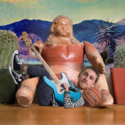

Recomendações
Mundo sem fim
Um casal e um macaquinho de pelúcia que estão viajando pelo mundo! Saímos do Brasil no final de 2015, e nossa viagem não tem planos de acabar. Acompanhe por aqui nossa jornada pelos países mais pitorescos do mundo!
Visitar Canal

Still Woozy
Still Woozy é um artista indie pop que combina sons eletrônicos, R&B e funk, conhecido por suas músicas suaves e melódicas com uma produção lo-fi.
Visitar Canal